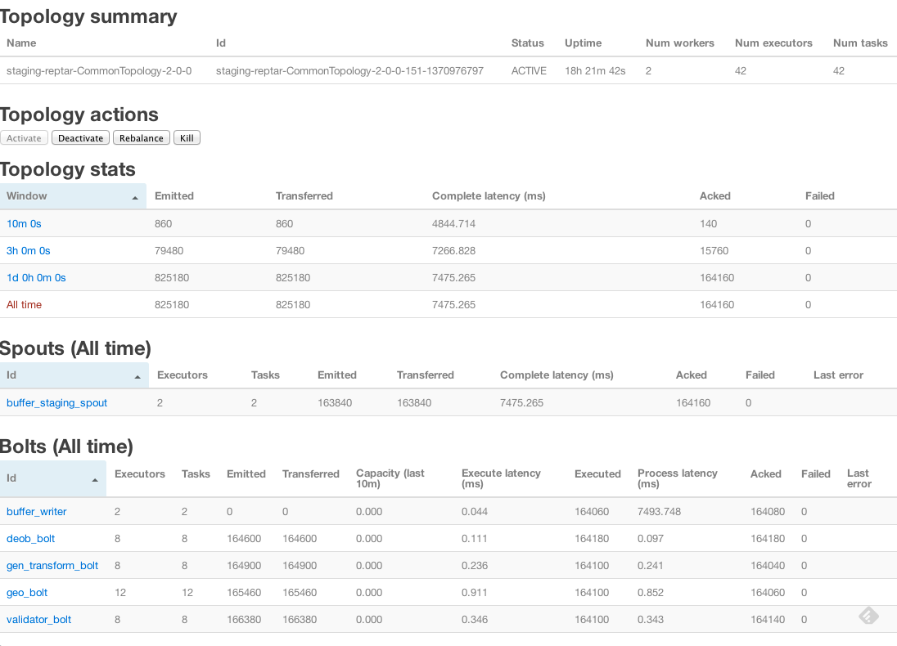

Storm
流式数据处理
by xiaofei
概念
Storm is a free and open source distributed realtime computation system.
描述
Storm makes it easy to reliably process unbounded streams of data, doing for realtime processing what Hadoop did for batch processing. Storm is simple, can be used with any programming language, and is a lot of fun to use!
功能特点
便于集成
Spout已实现与Kestrel、RabbitMQ/AMQP、Kafka、JMS等的集成插件
开发简单易于使用
只需要实现Spout、Bolt和topology,将topology提交到集群即可
水平扩展
可通过增加机器扩展Spout和Bolt的处理能力
保障数据被处理
- 记录级容错
- Transction
容错
- worker死掉了:Supervisor将重启它，持续fail且无心跳到Nimbus，Nimbus将重新分配它到其它机器。
- node死掉了:task分配到的机器无响应或time out，Nimbus将分配到其它机器
- Nimbus或Supervisor服务死掉了:Nimbus和Supervisor被设计为了无状态的，所有的状态都位于Zookeeper和本地磁盘。只要用daemontools或monit做好进程的监控，失败会就会自动重启。
- Nimbus是否单点(SPOF):Nimbus失效后不会影响Supervisor监管Worker，但会影响Worker的重新分配。所以这里需要着重增加监管。
易于部署和运维
- 架构类似于MapReduce，便于运维人员维护
兼容多语言
Java、Scala、JRuby、Jython、Clojure..
使用场景
- 流式处理
- 分布式RPC
- 持续计算
系统构架
| Hadoop | Storm |
| JobTracker | Nimbus |
| Zookeeper | |
| TaskTracker | Supervisor |
| Task | Worker |
编程模型

| Hadoop | Storm |
| Job | Topology |
| Map | Spout |
| Reduce | Bolt |
| Writable | Tuple |
| Task(Map/Reduce) | Task(Spout/Bolt) |
Streams
Spouts
public interface ISpout extends Serializable {
void open(Map conf, TopologyContext context,
SpoutOutputCollector collector);
void close();
void nextTuple();
void ack(Object msgId);
void fail(Object msgId);
}
Bolts
- 功能性操作
- 过滤操作
- 聚集操作
- Join操作
- 持久化操作(DB/Cache/HBase/Cassandra)
Bolts
public interface IBolt extends Serializable {
void prepare(Map stormConf, TopologyContext context, OutputCollector collector);
void execute(Tuple input);
void cleanup();
}
Topologies
Topologies
TopologyBuilder builder = new TopologyBuilder();
builder.setSpout("sentences", new KestrelSpout("kestrel.backtype.com",
22133,
"sentence_queue",
new StringScheme()));
builder.setBolt("split", new SplitSentence(), 10)
.shuffleGrouping("sentences");
builder.setBolt("count", new WordCount(), 20)
.fieldsGrouping("split", new Fields("word"));
Tasks
任务执行
任务执行
数据流分组

- Shuffle grouping:选择随机任务
- Fields Grouping:在tuple某字段上hash后求模
- All grouping:发送到所有的任务上
- Global grouping:取最小id的任务
- Direct:发送消息时指定任务
- Custorm:用户自定义,实现CustormStreamGrouping
Word Count
WordReader
public class WordReader implements IRichSpout {
private SpoutOutputCollector collector;
private FileReader fileReader;
private boolean completed = false;
private TopologyContext context;
public boolean isDistributed() {return false;}
public void ack(Object msgId) {
System.out.println("OK:"+msgId);
}
public void close() {}
public void fail(Object msgId) {
System.out.println("FAIL:"+msgId);
}
/**
* The only thing that the methods will do It is emit each
* file line
*/
public void nextTuple() {
/**
* The nextuple it is called forever, so if we have been readed the file
* we will wait and then return
*/
if(completed){
try {
Thread.sleep(1000);
} catch (InterruptedException e) {
//Do nothing
}
return;
}
String str;
//Open the reader
BufferedReader reader = new BufferedReader(fileReader);
try{
//Read all lines
while((str = reader.readLine()) != null){
/**
* By each line emmit a new value with the line as a their
*/
this.collector.emit(new Values(str),str);
}
}catch(Exception e){
throw new RuntimeException("Error reading tuple",e);
}finally{
completed = true;
}
}
/**
* We will create the file and get the collector object
*/
public void open(Map conf, TopologyContext context,SpoutOutputCollector collector) {
try {
this.context = context;
this.fileReader = new FileReader(conf.get("wordsFile").toString());
} catch (FileNotFoundException e) {
throw new RuntimeException("Error reading file["+conf.get("wordFile")+"]");
}
this.collector = collector;
}
/**
* Declare the output field "word"
*/
public void declareOutputFields(OutputFieldsDeclarer declarer) {
declarer.declare(new Fields("line"));
}
}
WordNormalizer
public class WordNormalizer implements IRichBolt {
private OutputCollector collector;
public void cleanup() {}
/**
* The bolt will receive the line from the
* words file and process it to Normalize this line
*
* The normalize will be put the words in lower case
* and split the line to get all words in this
*/
public void execute(Tuple input) {
String sentence = input.getString(0);
String[] words = sentence.split(" ");
for(String word : words){
word = word.trim();
if(!word.isEmpty()){
word = word.toLowerCase();
//Emit the word
List a = new ArrayList();
a.add(input);
collector.emit(a,new Values(word));
}
}
// Acknowledge the tuple
collector.ack(input);
}
public void prepare(Map stormConf, TopologyContext context,OutputCollector collector) {
this.collector = collector;
}
/**
* The bolt will only emit the field "word"
*/
public void declareOutputFields(OutputFieldsDeclarer declarer) {
declarer.declare(new Fields("word"));
}
}
WordCounter
public class WordCounter implements IRichBolt {
Integer id;
String name;
Map counters;
private OutputCollector collector;
/**
* At the end of the spout (when the cluster is shutdown
* We will show the word counters
*/
@Override
public void cleanup() {
System.out.println("-- Word Counter ["+name+"-"+id+"] --");
for(Map.Entry entry : counters.entrySet()){
System.out.println(entry.getKey()+": "+entry.getValue());
}
}
/**
* On each word We will count
*/
@Override
public void execute(Tuple input) {
String str = input.getString(0);
/**
* If the word dosn't exist in the map we will create
* this, if not We will add 1
*/
if(!counters.containsKey(str)){
counters.put(str, 1);
}else{
Integer c = counters.get(str) + 1;
counters.put(str, c);
}
//Set the tuple as Acknowledge
collector.ack(input);
}
/**
* On create
*/
@Override
public void prepare(Map stormConf, TopologyContext context,OutputCollector collector) {
this.counters = new HashMap();
this.collector = collector;
this.name = context.getThisComponentId();
this.id = context.getThisTaskId();
}
@Override
public void declareOutputFields(OutputFieldsDeclarer declarer) {}
}
DRPC
记录级容错

记录级容错
- Tuple超过topology.message.timeout.secs未被处理被视为失效
- 首先Storm从Spout中请求nextTuple获取tuple
- Spout通过SpoutOutputCollector提供的open方法输出tuple到输出流,并提供一个message id标识此tuple
- 接着tuple被Bolt消费,Storm跟踪它创建的消息树。如果Storm检测到tuple被fully process，Storm调用ack传入该message id。如果tuple超时将在Spout中调用fail方法。
事务拓扑
- Transactional topology
- Trident
Transactional topology
- 0.7.0引入
- 需要支持指定批次replay的queue
- 实现了基于kafka的transactional spout
Transactional topology
Trident
- 0.8.0引入

Trident Spout
FixedBatchSpout spout = new FixedBatchSpout(new Fields("sentence"), 3,
new Values("the cow jumped over the moon"),
new Values("the man went to the store and bought some candy"),
new Values("four score and seven years ago"),
new Values("how many apples can you eat"),
spout.setCycle(true);
Trident Topology
TridentTopology topology = new TridentTopology();
TridentState wordCounts =
topology.newStream("spout1", spout)
.each(new Fields("sentence"), new Split(), new Fields("word"))
.groupBy(new Fields("word"))
.persistentAggregate(new MemoryMapState.Factory(), new Count(), new Fields("count"))
.parallelismHint(6);
Trident BaseFunction
public class Split extends BaseFunction {
public void execute(TridentTuple tuple, TridentCollector collector) {
String sentence = tuple.getString(0);
for(String word: sentence.split(" ")) {
collector.emit(new Values(word));
}
}
}
Trident DRPC
DRPCClient client = new DRPCClient("drpc.server.location", 3772);
System.out.println(client.execute("words", "cat dog the man");
// prints the JSON-encoded result, e.g.: "[[5078]]"
topology.newDRPCStream("words")
.each(new Fields("args"), new Split(), new Fields("word"))
.groupBy(new Fields("word"))
.stateQuery(wordCounts, new Fields("word"), new MapGet(), new Fields("count"))
.each(new Fields("count"), new FilterNull())
.aggregate(new Fields("count"), new Sum(), new Fields("sum"));
状态存储
- Trident解决的两个问题
- 为每一批次提供了一个唯一的transaction id，重试时使用一致的transaction id
- 状态更新依据批次的顺序
- 存储方式
- Memory
- Memcached
- Cassandra
- ...
Trident topology

Storm的问题
- 向topology增加业务时需要删除原有topology部署新的topology(0.9增加了swap)
- topology间不能传递数据（只能通过Queue队列间接传递)
业界应用
Twitter场景(Tweitgeist)
Live top 10 trending hashtags on Twitter
一淘数据部(月光宝盒)
一淘数据部(月光宝盒)

携程(Alerting)

运维监控
监控工具
- Storm UI
- JMX/VisualVM
- Yammer Metrics
- Ganglia/Graphite
- Log4j
- Nagios(监控硬件、系统、log中的ERROR/WARN)
- OpenTSDB
- storm-monitor
Storm UI
JMX/VisualVM
Yammer Metrics
http://metrics.codahale.com/
<dependencies>
<dependency>
<groupId>com.codahale.metrics</groupId>
<artifactId>metrics-core</artifactId>
<version>${metrics.version}</version>
</dependency>
</dependencies>
Yammer Metrics
//application level static
final MetricRegistry metrics = new MetricRegistry();
//Gauges 标尺
public class QueueManager {
private final Queue queue;
public QueueManager(MetricRegistry metrics, String name) {
this.queue = new Queue();
metrics.register(MetricRegistry.name(QueueManager.class, name, "size"),
new Gauge() {
@Override
public Integer getValue() {
return queue.size();
}
});
}
}
//counters 计数器
private final Counter pendingJobs = metrics.counter(name(QueueManager.class, "pending-jobs"));
public void addJob(Job job) {
pendingJobs.inc();
queue.offer(job);
}
public Job takeJob() {
pendingJobs.dec();
return queue.take();
}
..
Ganglia
Graphite

OpenTSDB


storm-monitor
https://github.com/killme2008/storm-monitor参考用于监控Nimbus
- 监控supervisor数目是否正确，当supervisor挂掉的时候会发送警告
- 监控nimbus是否正常运行，monitor会尝试连接nimbus，如果连接失败就认为nimbus挂掉。
- 监控topology是否正常运行，包括它是否正常部署，是否有运行中的任务
其它可选监控工具
- Ooyala metrics_storm
- Storm 0.9 Metrics
- 按固定的时间窗口收集任意的用户自定义metric
- metric最终被Storm聚合
- 可自定义MetricsConsumer
服务性能监控
- 拓扑图
- 吞吐量
- 延迟
- Bolt和spout
- 吞吐量
- 延迟
- 队列时间
- 执行时间
- 数据来源和数据存储
- 读/写条数
- 读/写速度
- Storm 0.8.2 new metrics
- process latency(tuple直到被ack的时间)
- execute latency(tuple被调度执行的时间)
- capacity(上十分钟bolt用于执行tuple的时间百分比)
CheckList应用级监控
- Kafka读取速度
- HBase写入速度
- 规则处理引擎某topic单条数据处理时间
- 规则处理引擎处理速度
- 规则处理引擎出错次数
- 处理数据延迟(根据数据业务日期)
- QueryTools查询响应时间
- 数据接口监控
推荐监控方案
- 服务或组件监控
- Nagios(硬件、服务进程、log)参考storm_monitor
- Storm UI(Thrift)
- Ooyala metrics_storm
- Ganglia/Graphite
- 应用监控
- Yammer Metrics